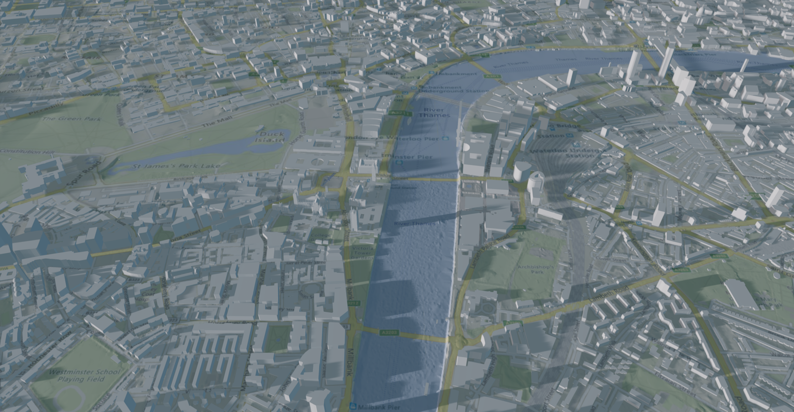

Cesium

The Evergine Cesium add-on streams real-world geospatial content from Cesium ion into Evergine: global terrain, 3D buildings, and imagery. It also includes an Earth-aware camera, a component that places entities at latitude and longitude, and optional geocoding to search places by address. Use it to build digital twins, city viewers, or any application that shows content on the real globe.
Features
| Category | Capabilities |
|---|---|
| Tilesets | Streams Cesium ion tilesets with AddTileset: terrain with an imagery overlay, such as Cesium World Terrain, and tilesets with their own textures, such as 3D buildings. Each one has its own screen space error. |
| Rendering | GPU-driven rendering: all the tiles share vertex and index buffers and a texture atlas, and they are drawn with indirect draw calls. Tiles cast and receive shadows. |
| Streaming | A dedicated worker thread updates the tilesets and samples the terrain height without blocking the scene update. |
| Imagery | Switchable overlays: Bing aerial and roads, and several Google Maps styles. |
| Camera | WorldCamera navigates by latitude, longitude, and height, with an optional custom zoom controller, and FlyTo animates the camera to a place. |
| Placement | CesiumPlacerComponent places any entity at geodetic coordinates, optionally relative to the terrain height. |
| Geocoding | Address search, reverse geocoding, and autocomplete through Azure Maps or Google Maps (requires a key for the service). |
| Lighting | SunLightDirection orients a directional light like the sun for a day of the year and an hour, and adjusts its color and intensity to the height of the sun. |
| Diagnostics | Visible and resident tile counters, and the GPU memory usage of the vertex and index buffers and the texture atlas. |
Requirements
- A Cesium ion access token with access to the assets you stream. You can create one for free.
- Optionally, an Azure Maps or Google Maps key for geocoding.
- A Windows profile. The add-on sample targets DirectX 11, DirectX 12, and Vulkan.
Note
Evergine Cesium does not support Web platforms (WebGL and WebGPU).